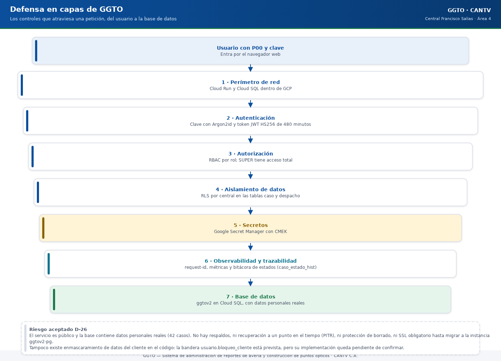

Sistema de administración de reportes de avería y construcción de puntos ópticos
Manual literal · OperaciónManual de Seguridad y Privacidad — GGTO
Este manual explica, en lenguaje sencillo, cómo protege GGTO la información y los accesos. Describe lo que el sistema hace hoy y separa con claridad lo que está previsto pero todavía no está implementado. Todo dato que no se pudo verificar se marca como «pendiente de confirmar». Aquí no se incluye ningún secreto ni contraseña: solo se citan los nombres de los secretos.
Este manual explica, en lenguaje sencillo, cómo protege GGTO la información y los accesos. Describe lo que el sistema hace hoy y separa con claridad lo que está previsto pero todavía no está implementado. Todo dato que no se pudo verificar se marca como «pendiente de confirmar». Aquí no se incluye ningún secreto ni contraseña: solo se citan los nombres de los secretos.
1Empezar en 5 minutos
- Cuida tu acceso. Tu usuario es tu P00 y tu clave se guarda cifrada con Argon2id. Nadie del equipo debe conocer tu clave.
- Guarda tus 12 palabras. En tu primer acceso (enlace «Primer acceso (obtener clave)» de la pantalla de entrada) fijas tu correo y tu clave, y el sistema te muestra 12 palabras de seguridad. Se piden 3 de ellas para desbloquear la cuenta o restablecer la clave. Si las pierdes, solo el Super Usuario puede generarte un juego nuevo (botón «Palabras»).
- Respeta tu rol. Tu rol (SUPER, ADMIN, SUPERVISOR o TECNICO) define qué puedes ver y qué puedes escribir. Si el menú CONFIGURACIÓN no aparece, es porque tu rol no lo permite.
- No compartas datos personales. Teléfonos, direcciones, nombres y seriales son datos personales (PII). Muéstralos solo a quien los necesita para su trabajo.
- Reporta de inmediato cualquier sospecha de acceso indebido, clave expuesta o envío de datos a un destinatario equivocado.
| Dato | Valor |
|---|---|
| Proyecto | GGTO — Sistema de administración de reportes de avería y construcción de puntos ópticos |
| Cliente | CANTV C.A. — Central Francisco Salias (Área 4) |
| Alcance | Modelo de seguridad, RBAC, RLS, secretos, PII, superficie de exposición y endurecimiento |
| Requerimientos aplicables | RNF-01 a RNF-05, RNF-18, RNF-21 y RNF-22 |
| Riesgo aceptado vigente | D-26 — instancia compartida sin respaldos, sin PITR y sin SSL obligatorio |
2Modelo de seguridad
2.1Defensa en capas
La seguridad de GGTO se apoya en varias capas independientes: si una falla, las demás siguen protegiendo el sistema.
| Capa | Mecanismo | Cómo está implementado |
|---|---|---|
| Perímetro de red | Servicio Cloud Run y Cloud SQL en GCP | Infraestructura en Google Cloud |
| Autenticación | P00 + clave con hash Argon2id y token JWT |
Módulo de seguridad de la aplicación |
| Autorización | RBAC por rol, con permiso total para SUPER |
Dependencia de roles en la API |
| Aislamiento de datos | RLS en PostgreSQL sobre caso y despacho |
Políticas en el esquema de la base |
| Secretos | Google Secret Manager con cifrado CMEK | Script de aprovisionamiento de KMS |
| Observabilidad | request-id y métricas de negocio |
Middleware y endpoints de métricas |
| Trazabilidad | Bitácora de estados del caso y registro de acciones sensibles | Tablas caso_estado_hist y auditoria |

Código del gráfico (Mermaid)
flowchart TB
A[Usuario<br/>P00 + clave] --> B[Perimetro de red<br/>Cloud Run y Cloud SQL en GCP]
B --> C[Autenticacion<br/>Argon2id + token JWT]
C --> D[Autorizacion<br/>RBAC por rol, SUPER con acceso total]
D --> E[Aislamiento de datos<br/>RLS en caso y despacho]
E --> F[Secretos<br/>Google Secret Manager con CMEK]
F --> G[Observabilidad y trazabilidad<br/>request-id, metricas, bitacora de estados y auditoria]
G --> H[(Base de datos<br/>ggtov2)]2.2Autenticación
El ingreso a la plataforma se realiza con P00 (identificador laboral) y clave. La clave se
almacena como hash Argon2id, con los parámetros por defecto de la librería argon2-cffi.
El perfil del dispositivo guarda 12 palabras de seguridad. De esas 12 palabras se exigen 3 para desbloquear la cuenta o para restablecer la clave. El diccionario de palabras está definido en el código y se genera de forma aleatoria y segura.
| Control | Valor real |
|---|---|
| Hash de la clave | Argon2id, con parámetros por defecto |
| Algoritmo del token | HS256 |
| Vigencia del token | 480 minutos (8 horas) |
| Contenido del token | sub (el P00), rol, exp, iat y jti |
| Intentos antes del bloqueo | 3 |
| Límite de intentos | 10 intentos cada 60 segundos, por P00 e IP |
| Normalización de palabras | Se pasan a minúsculas y se quitan los acentos |
Mensaje ante un P00 inexistente |
Genérico: no revela si el usuario existe |
| Bloqueo | Se marca el usuario como bloqueado al tercer fallo y la API responde 423 |
| Desbloqueo | Con 3 de las 12 palabras |
| Restablecer la clave | Con 3 de las 12 palabras |
| Alta de primer acceso | La hace el propio técnico desde «Primer acceso (obtener clave)», si su supervisor ya registró el P00 |
| Palabras perdidas | Solo el Super Usuario puede generar un juego nuevo; las anteriores dejan de funcionar y las nuevas se muestran una sola vez |
| Guardado de las palabras | Solo huellas cifradas e irreversibles (hash Argon2id): el sistema nunca puede volver a mostrarlas |
El token se valida en cada petición. Si falta, es inválido o está expirado, la API responde 401.
Si el usuario está bloqueado, responde 423.
Punto de atención: la clave de firma de la aplicación (
secret_key) tiene un valor por defecto de desarrollo. En producción ese valor debe venir de Secret Manager, con el nombreSECRET_KEY. Si no se sobrescribe, cualquiera podría forjar un token. Verificar este valor en cada despliegue es una tarea operativa crítica.
2.3Autorización
La autorización se resuelve con una fábrica de guardias de roles. Cada módulo declara los roles que pueden escribir; la lectura se concede a cualquier usuario autenticado.
| Módulo | Permiso de escritura |
|---|---|
| Ingesta | ADMIN y SUPERVISOR |
| PANEL / CASOS | ADMIN y SUPERVISOR |
| DESPACHO | ADMIN y SUPERVISOR |
| ESPECIALES / AGENDA | ADMIN y SUPERVISOR |
| CONFIGURACIÓN | ADMIN y SUPERVISOR |
| Recuperación de palabras (botón «Palabras», D-67) | Solo SUPER |
| ALERTAS / OUTBOX | ADMIN y SUPERVISOR |
| MONITOREO / REPORTES | Solo lectura (cualquier usuario autenticado) |
En la aplicación web, el menú CONFIGURACIÓN solo se muestra a los roles SUPER, ADMIN y
SUPERVISOR. El rol TECNICO ve los formularios en modo solo lectura.
Ocultar el menú es una ayuda de usabilidad, no un control de seguridad. La autorización real ocurre en el backend: aunque alguien intente llamar a un endpoint directamente, el servidor valida el rol.
2.4Auditoría
La tabla auditoria está definida en el esquema con los campos: usuario, accion, entidad,
id_entidad, datos_antes, datos_despues, ip y fecha_hora.
La aplicación ya escribe en
auditoriadesde el ciclo D-67. Quedan registradas dos acciones sensibles del alta y la recuperación de técnicos:
ALTA_PRIMER_ACCESO: cuando el técnico crea su cuenta desde «Primer acceso (obtener clave)».REGENERAR_PALABRAS: cuando el Super Usuario genera un juego nuevo desde el botón «Palabras». El registro guarda quién lo pidió, para qué P00, la versión anterior de las palabras y la nueva.
La trazabilidad efectiva en la versión 1 se reparte así:
- la bitácora de estados
caso_estado_hist, que registra estado anterior, estado nuevo, motivo y usuario, y se consulta por caso; - el campo
caso.creado_por; - la tabla
auditoria, con el alta y la regeneración de cuentas (D-67); - el registro del middleware, que no incluye el usuario.
Los requerimientos RNF-12 y RNF-19 exigen registrar usuario, fecha y hora y los cambios sobre cada caso, además de incluir el usuario en los registros. La bitácora general todavía no cubre todos los cambios y el middleware no registra el usuario: esas dos partes siguen pendientes de confirmar.
3RBAC
3.14 roles y bypass SUPER
Los roles de la versión 1 son SUPER, ADMIN, SUPERVISOR y TECNICO. Cada usuario pertenece a una central.
El rol SUPER (Super Usuario) tiene acceso total: la guardia de roles le concede cualquier
operación sin necesidad de enumerarlo en cada endpoint. Es una decisión explícita (D-50) que
cubre también las secciones y funciones futuras.
La cuenta se crea con el script scripts/inyectar_super_usuario.py, que es idempotente, pide
confirmación y no escribe la clave en el archivo ni en la línea de comandos: la lee de la
variable de entorno GGTO_SUPER_CLAVE o la solicita de forma oculta.
Aspecto de SUPER |
Comportamiento |
|---|---|
| Permiso de autorización | Cualquier operación permitida |
| Creación de la cuenta | Script con confirmación y bitácora |
| Hash de la clave | Reutiliza el mismo Argon2id de la aplicación |
| Palabras de seguridad | Opcionales, con la opción --con-palabras |
3.2Matriz rol × módulo (requerimientos.md:227-256)
| Módulo / acción | SUPER | ADMIN | SUPERVISOR | TECNICO |
|---|---|---|---|---|
| CONFIGURACIÓN (central, sectores, catálogos, usuarios, flota, cuadrillas) | CRUD | CRUD | Lectura + edición operativa | — |
| INGESTA (cargar y procesar CSV) | CRUD | CRUD | CRUD | — |
| PANEL (buscar, editar, alta manual) | CRUD | CRUD | CRUD | Lectura de sus casos |
| CASOS / SEGUIMIENTO / EMPRESAS / REFERIDOS | CRUD | CRUD | CRUD | Lectura + gestión de su cuadrilla |
| DESPACHO (armar, publicar, reporte 16:00) | CRUD | CRUD | CRUD | Lectura de su despacho |
| GESTIÓN (cuadrilla 0) | CRUD | CRUD | CRUD | — |
| MONITOREO / GRÁFICOS | Lectura | Lectura | Lectura | — |
| GESTIÓN TÉCNICA (contactar, atender, cerrar, enrutar, diferir, evidencias) | CRUD | — | Lectura | CRUD (solo sus casos y en modo sin conexión) |
| ALERTAS (falla masiva, incidentes, solicitud de material) | CRUD | Lectura | Lectura | CRUD |
| INSUMOS (versión 2) | CRUD | CRUD | CRUD | Solicitud |
| AUDITORÍA | Lectura | Lectura | — | — |
| RECUPERACIÓN DE PALABRAS (botón «Palabras», D-67) | CRUD | — | — | — |
| USUARIOS y accesos | CRUD | CRUD | Alta y baja de técnicos | — |
El rol SUPER no se enumera en los endpoints porque la guardia de roles le concede todo.
Brechas verificadas entre la matriz y el código:
- La matriz prevé la gestión de USUARIOS y accesos, pero el inventario de endpoints no incluye
/api/v1/usuariosni existe una pantalla dedicada: hoy la creación y actualización de usuarios se hace con el scriptscripts/inyectar_super_usuario.py. Está pendiente de confirmar.- La matriz limita al TECNICO a «sus casos», pero el listado de casos solo filtra por central si el cliente envía ese parámetro. No hay acotación automática por la central del usuario. Está pendiente de confirmar (ver «RLS»).
- Toda la escritura por encima de TECNICO exige ADMIN o SUPERVISOR. No existe un rol con permiso de escritura exclusivo de MONITOREO.
3.3Pruebas negativas
Las pruebas de autorización y de interfaz están documentadas en el informe de Fase 4:
| Prueba | Ámbito | Resultado |
|---|---|---|
test_config.py (13) |
RBAC de escritura en CONFIGURACIÓN | 13/13 |
11-rbac.spec.js (4) |
TECNICO solo lectura, ADMIN operativo | 4/4 |
02-navegacion.spec.js (7) |
RBAC del menú y de las secciones | 7/7 |
test_auth.py (11 en Fase 4, 15 hoy) |
Inicio de sesión, bloqueo, desbloqueo, 12 palabras y las 4 pruebas del ciclo D-67 (primer acceso, estado de la cuenta y regeneración solo por SUPER) | En verde |
El total de la Fase 4 fue 169/169 pruebas pytest + 46/46 pruebas E2E = 215 pruebas en verde.
Además, las herramientas ruff, mypy y tsc en modo estricto no reportaron hallazgos.
Las pruebas negativas entre centrales (que la central A no pueda acceder a datos de la central B), que exige RNF-21, no se documentan en el informe y están pendientes de confirmar.
4RLS en PostgreSQL
4.1Caso y despacho
La seguridad por filas (Row Level Security, RLS) se aplica como defensa en profundidad
sobre dos tablas: caso y despacho. Ambas tienen habilitada y forzada la seguridad por filas.
La función app_central_actual() lee el parámetro de sesión app.id_central y lo convierte a un
número entero.
4.2Políticas
| Tabla | Política | Regla |
|---|---|---|
caso |
p_caso_central |
La central actual es nula, o la central de la fila es igual a la central actual |
despacho |
p_despacho_central |
La misma regla |
Ambas políticas usan la misma expresión para la lectura y para la escritura, de modo que limitan tanto consultar como modificar datos.
La cláusula que permite el valor nulo es un modo de compatibilidad. El propio esquema advierte que la aplicación debe fijar el alcance con
SET LOCAL app.id_central = '<id_central>'en cada conexión, y que antes de producción debe eliminarse esa cláusula para que la política sea de «denegar por defecto».Estado real: ninguna parte de la aplicación ejecuta
SET LOCAL app.id_central. En consecuencia, el parámetro siempre es nulo y las políticas permiten todas las filas. La capa RLS está desplegada, pero inactiva de hecho: es un control pendiente de confirmar y de conectar desde la capa de datos.
4.3Alcance por central (RNF-21)
RNF-21 exige que la central del usuario acote su alcance y que RLS refuerce la autorización. Hoy:
| Control | Estado |
|---|---|
El campo usuario.id_central existe en el modelo |
|
| El token incorpora la central del usuario | |
| Las consultas acotan por la central del usuario | No; solo si el cliente lo pide como parámetro |
RLS activa con app.id_central fijado por la aplicación |
No se fija |
| Pruebas negativas entre centrales | No documentadas |
Consecuencia de seguridad: mientras no se conecte RLS y no se acoten las consultas, un usuario autenticado de cualquier rol (incluido TECNICO) puede leer casos de cualquier central, pase o no el filtro. Es una brecha de aislamiento entre centrales que está pendiente de confirmar y corregir.
5Gestión de secretos
5.1Secret Manager
Los secretos se almacenan en Google Secret Manager con cifrado gestionado por Cloud KMS (CMEK).
El script de aprovisionamiento define el llavero ggtov2, las claves ggtov2-secrets y
ggtov2-storage, y una rotación de 90 días (rotationPeriod: 7776000s).
| Secreto (solo el nombre) | Contenido |
|---|---|
ggtov2-db-password |
Contraseña del usuario de base de datos |
ggtov2-db-root-password |
Contraseña root de la instancia planificada |
ggtov2-app-secret-key |
Clave de firma de la aplicación (SECRET_KEY) |
ggtov2-db-connection |
Cadena de conexión de la instancia compartida |
ggto-secret-key |
Clave usada por el servicio ggto-web |
ggtov2-django-secret-key |
Reservado en el aprovisionamiento |
ggtov2-store-password y tokens de mensajería |
No creados: Telegram, SMTP y MCP siguen sin credenciales |
El acceso se limita por IAM con el rol roles/secretmanager.secretAccessor a la cuenta de servicio
del runtime ggtov2-app@ggtov2.iam.gserviceaccount.com.
El script de la instancia compartida otorga además lectura a ggtov2-app@ggtov2 y a
truekeate-app-sa@truekeate-main. Se verificó que truekeate-app-sa no tiene acceso a los
secretos de GGTO.
5.2Variables de entorno
La aplicación se configura solo por variables de entorno (RNF-25). La configuración se declara
con pydantic-settings y lee un archivo .env. Las variables que referencian secretos nunca
llevan el valor en el repositorio: solo el nombre del secreto.
| Variable | Origen del valor |
|---|---|
SECRET_KEY |
Secret Manager (ggtov2-app-secret-key o ggto-secret-key) |
DB_PASSWORD |
Secret Manager (ggtov2-db-password) |
TELEGRAM_BOT_TOKEN |
Secret Manager (no configurado) |
SMTP_PASSWORD |
Secret Manager (no configurado) |
MCP_API_KEY |
Secret Manager (no configurado) |
telegram.webhook_secret |
Tabla configuracion (vacío: no se exige) |
mcp.api_key |
Tabla configuracion (vacío: no se exige) |
El archivo .gitignore excluye los CSV con datos personales (detalle_averias_gpon*.csv), por el
hallazgo H-01, y la carpeta RepoTecnico/credenciales/ también está ignorada por Git.
5.3Rotación
| Elemento | Periodicidad o procedimiento |
|---|---|
| Claves de Cloud KMS | Rotación automática cada 90 días |
| Contraseña de base de datos | Nueva versión del secreto y nueva revisión de Cloud Run |
SECRET_KEY de la aplicación |
Pendiente de confirmar: no hay procedimiento documentado |
| Token JWT | Sin revocación: es stateless; el jti se emite, pero no hay lista de revocación |
5.4Incidente de exposición resuelto (entornos_globales.md:100-106)
Durante la verificación del entorno, un mensaje de error de Node imprimió la contraseña del
usuario app de TrueKeate, que estaba contenida en el secreto DATABASE_URL. La respuesta fue:
- Rotar la contraseña con
ALTER ROLE app PASSWORD '<nueva>', usando 32 caracteres aleatorios. - Publicar una nueva versión del secreto
DATABASE_URL(versión 3) entruekeate-main. - Desplegar una nueva revisión de Cloud Run
truekeate-api-00034-hvkpara tomar el valorlatest, con estadoReady, el 100 % del tráfico y sin errores de autenticación en los registros. - Confirmar que
truekeate-webno consumeDATABASE_URL, por lo que no necesitó una revisión nueva.
Lecciones operativas aplicables a GGTO: no imprimir valores de secretos en registros ni en
mensajes de error; rotar ante cualquier sospecha; y consumir siempre la versión latest de forma
controlada, con una nueva revisión del servicio. Las credenciales de mensajería no deben
registrarse en el repositorio.
6PII y privacidad (RNF-18/D-34)
6.1Inventario de PII
El sistema trata datos personales de suscriptores y de trabajadores. RNF-18 exige un inventario y una clasificación de datos personales, y la decisión D-34 lo aprueba como decisión de diseño.
| Entidad | Datos personales que contiene |
|---|---|
caso |
Nombre, teléfono, dirección y serial |
actividad |
Reporte libre y GPS |
evidencia |
Imagen, GPS y hora |
auditoria |
Datos antes y después |
notificacion |
Destinatario y cuerpo del mensaje |
solicitante |
Nombre y contacto |
| Archivo CSV de origen | Nombre, teléfono, dirección, serial y datos personales de trabajadores |
En producción hay 1 lote de ingesta con 42 casos reales que contienen datos personales de suscriptores.
6.2Base legal y finalidad
RNF-18 exige declarar la base legal y la finalidad del tratamiento. La decisión D-34 registra que la base legal, la finalidad, el inventario, la minimización, el enmascaramiento, los derechos del titular y el acuerdo de tratamiento de datos quedan definidos como decisión.
Queda la salvedad expresa de que la validación legal con CANTV está pendiente. El responsable de protección de datos es CANTV (externo) y está pendiente de designar.
6.3Minimización
La minimización se aplica en la frontera de datos: el lector descarta 21 columnas del CSV y mapea las restantes a 49 campos destino, unificando tres columnas de información en una.
El archivo de origen no se transforma más allá de esa depuración. Los campos de texto tienen longitudes máximas para evitar volcados inesperados.
6.4Enmascaramiento por rol
RNF-18 exige enmascarar teléfono, dirección y serial para los roles no autorizados.
No implementado. No existe en el código ninguna referencia a enmascarar, ocultar o tratar datos personales. Los endpoints devuelven los datos en claro a cualquier usuario autenticado: el listado y la búsqueda de casos incluyen teléfono, nombre del cliente y dirección, y la ficha imprimible de la cuadrilla incluye teléfono y nombre del cliente. El enmascaramiento por rol está pendiente de confirmar y no está implementado.
6.5Retención por entidad (requerimientos.md:212-225)
| Entidad | ¿Contiene PII? | Retención propuesta | Acción al vencer |
|---|---|---|---|
caso |
Sí (nombre, teléfono, dirección, serial) | 5 años | Anonimizar y archivar |
actividad |
Sí (reporte libre, GPS) | 5 años | Anonimizar |
evidencia |
Sí (imagen, GPS y hora) | 2 años | Eliminar imagen y metadatos |
auditoria |
Sí (datos antes y después) | 3 años | Archivar sin datos personales |
notificacion |
Sí (destinatario y cuerpo) | 1 año | Eliminar |
solicitante |
Sí (nombre y contacto) | 5 años | Anonimizar |
dispositivo_seguridad |
No (solo hashes) | Mientras la cuenta esté activa | Eliminar con la cuenta |
inventario_movimiento / orden_material (versión 2) |
No | 5 años | Archivar |
Los plazos son una propuesta y deben validarse con CANTV y asesoría legal. No existe una tarea ni rutina de purga o anonimización implementada en el código: la retención es hoy una política pendiente de confirmar y de automatizar.
6.6Derechos del titular
RNF-18 exige atender los derechos de acceso, rectificación y supresión. No existe en la versión 1 un endpoint ni una pantalla específica para ejercerlos. Las vías disponibles son operativas (consultar y editar la ficha del caso) y no cubren la supresión ni la anonimización. Este punto está pendiente de confirmar con CANTV.
6.7DPA con proveedores
RNF-18 exige acuerdos de tratamiento de datos (DPA) con los proveedores. Los proveedores que pueden tratar datos son:
| Proveedor | Uso | Estado del DPA |
|---|---|---|
| SendGrid (o Gmail SMTP) | Envío de correo | Pendiente de confirmar |
| Telegram | Envío de alertas y bot | Pendiente de confirmar |
| Google Cloud (Cloud Run, Cloud SQL, Secret Manager) | Infraestructura | Pendiente de confirmar |
| Servidor MCP / IA | Ingesta conversacional de casos especiales | Pendiente de confirmar |
6.8Transferencia internacional
El tratamiento implica transferencia fuera de Venezuela: el servicio Cloud Run corre en
europe-west1 y la base operativa en southamerica-east1. Además, Telegram opera en el exterior
y el correo puede usar SendGrid.
RNF-18 exige evaluar la transferencia internacional. La evaluación y las garantías contractuales están pendientes de confirmar con CANTV y asesoría legal.
7Superficie de exposición actual
7.1Servicio Cloud Run público con PII real: DEBE restringirse
El servicio ggto-web está desplegado con acceso público: el script concede el rol
roles/run.invoker a allUsers, y el documento de entorno lo confirma como «Público (allUsers)
— prueba de humo; endurecer antes de producción».
La dirección del servicio es https://ggto-web-593453426217.europe-west1.run.app.
Ese servicio opera hoy con datos personales reales (42 casos) y la recomendación es explícita:
restringir el acceso (con IAP o invocación autenticada), porque hoy allUsers alcanza la API y
la aplicación web. El informe de Fase 4 lo lista como pendiente que no bloquea las pruebas,
pero sí debe resolverse antes de operar en producción, y los próximos pasos insisten en
restringir el acceso público antes de seguir cargando datos.
Precisión técnica sobre esa afirmación:
- La mayoría de los endpoints
/api/v1/*sí exigen token JWT. - Son públicos (sin token):
/api/v1/info,/healthy/ready; el inicio de sesión (login); la consulta del primer acceso (primer-acceso); la configuración inicial (setup); yunlockyreset-password. /api/v1/telegram/webhooky/api/v1/mcpse protegen con cabecera secreta solo si está configurada. Si la clave está vacía, no se exige.
El riesgo real es de exposición de perímetro: cualquier persona alcanza el servicio, la
aplicación web, el inicio de sesión y las sondas. Además, GET /ready publica el nombre de la
base, el usuario y el número de tablas. Debe restringirse con IAP o con invocación
autenticada.
7.2Riesgo aceptado D-26
El riesgo D-26 fue aceptado el 2026-09-25 por la Dirección del proyecto: no se modifican
los respaldos, la recuperación a un punto en el tiempo (PITR) ni el SSL de la instancia compartida
truekeate-db-dev. Su condición de cierre es «migrar a ggtov2-pg propio (regional, con SSL
ENCRYPTED_ONLY, respaldos, PITR y protección de borrado) cuando se resuelva la cuota de
facturación».
La misma decisión indica que no se deben cargar datos reales de producción en la instancia compartida hasta que exista respaldo.
| Riesgo aceptado | Impacto |
|---|---|
| Sin respaldos ni PITR | Pérdida irreversible de datos |
| Sin SSL obligatorio en la instancia | Interceptación del tráfico |
| Sin protección de borrado | Borrado accidental o malicioso sin retorno |
| Datos compartidos por base | Coexistencia con TrueKeate en la misma instancia |
7.3Rol de BD con NOINHERIT y riesgo residual
El rol de base de datos ggtov2_app fue endurecido el 2026-09-25:
| Cambio | Estado |
|---|---|
CREATEROLE revocado |
|
CREATEDB revocado |
|
NOINHERIT aplicado |
|
Membresía cloudsqlsuperuser revocada |
No fue posible por SQL: la pertenencia persiste, pero no se hereda |
CONNECT, TEMPORARY y CREATE de PUBLIC revocados en bases ajenas |
|
CONNECT re-otorgado a app y postgres |
(TrueKeate sigue operando) |
CONNECT y CREATE en ggtov2 y public |
(el DDL de prueba funciona) |
truekeate-app-sa sin acceso a secretos de GGTO |
(solo ggtov2-app@ggtov2) |
Riesgo residual (D-25): al seguir siendo miembro de cloudsqlsuperuser, ggtov2_app podría
recuperar privilegios con un SET ROLE cloudsqlsuperuser explícito. La corrección definitiva
requiere recrear el rol, cosa que no es posible con los privilegios actuales. Se decidió
aceptar el riesgo residual con NOINHERIT y documentarlo.
8Endurecimiento recomendado
8.1IAP o invocación autenticada
Acción prioritaria: retirar allUsers del permiso de invocación de Cloud Run y exponer el servicio
mediante Identity-Aware Proxy (IAP) o invocación autenticada. Es la recomendación explícita
de la documentación del proyecto. Debe hacerse antes de seguir cargando datos personales
reales.
8.2SSL ENCRYPTED_ONLY
La instancia propia planificada fija SSL en modo ENCRYPTED_ONLY e IPv4 deshabilitado, con red
privada. La aplicación ya solicita TLS con DB_SSLMODE=require, pero la instancia compartida no
lo obliga.
Al migrar a ggtov2-pg, verifica que la conexión use socket privado y TLS estricto.
8.3Backups/PITR
Habilita en la instancia propia los respaldos (backupConfiguration.enabled), la recuperación a un
punto en el tiempo (pointInTimeRecoveryEnabled) y la protección de borrado
(deletionProtectionEnabled). Esto cierra D-26 y satisface RNF-16 (RPO ≤ 24 h y RTO ≤ 4 h).
Debe acompañarse de una prueba de restauración documentada al menos cada trimestre (RNF-16).
8.4MFA (RNF-22, previsto)
RNF-22 exige MFA obligatorio para ADMIN y SUPERVISOR, además de política de complejidad, caducidad e historial de claves; expiración, rotación y revocación de sesión; protección CSRF y CORS; y registro de los eventos de inicio de sesión. La matriz RBAC insiste en el MFA para ADMIN y SUPERVISOR.
| Control de RNF-22 | Estado real |
|---|---|
| Hash Argon2id | Implementado |
| Bloqueo y límite de intentos | Implementado |
| Expiración del token | 480 minutos |
| MFA | No implementado (no hay TOTP ni OTP en el código) |
| Complejidad, caducidad e historial de claves | No implementado |
| Revocación de sesión o token | No implementado (JWT sin lista de revocación) |
| Protección CSRF | No implementado (no hay referencias a CSRF) |
| CORS restringido | Por defecto cors_origins = "*" |
| Registro de eventos de inicio de sesión | Parcial: el alta y la recuperación de cuentas quedan en auditoria (D-67); el inicio de sesión y el usuario en los registros siguen pendientes |
| Autenticación de canales externos | Por cabecera, solo si la clave está configurada |
El MFA, la política de claves, la revocación de tokens, la protección CSRF y un CORS restringido están exigidos por RNF-22 pero no están implementados: son los principales puntos de endurecimiento pendientes de confirmar. Mientras tanto,
cors_originsdebe fijarse a los orígenes reales en producción, y las clavestelegram.webhook_secretymcp.api_keydeben establecerse (hoy están vacías, por lo que no se exigen).
9Cumplimiento y pendientes
| Tema | Responsable | Estado |
|---|---|---|
| Administración de catálogos, flota y almacén | SUPERVISOR | Cubierto en la versión 1 |
| Auditoría interna de la bitácora | ADMIN (solo lectura de auditoria) |
Parcial: el alta y la recuperación de cuentas quedan registradas (D-67); el resto de eventos, pendiente |
| Soporte y mesa de ayuda de la plataforma | SUPERVISOR (registro por correo) | Informal en la versión 1 |
| Responsable de protección de datos | CANTV (externo) | Pendiente de designar |
| Dueño del sistema origen (CSV) | CANTV (externo) | Pendiente de formalizar |
| Validación legal de base legal y retención | CANTV y asesoría legal | Pendiente |
| Firma del contrato de interfaz del CSV | CANTV | Pendiente |
Gobierno de datos en la versión 1 (D-39): la administración de catálogos, la flota y el almacén recaen en el SUPERVISOR; la auditoría interna, en el ADMIN en modo lectura. No existe el rol AUDITOR en la versión 1.
9.1Lista de acciones recomendadas
- Restringir el acceso público de
ggto-webcon IAP o invocación autenticada. - Migrar a
ggtov2-pgcon respaldos, PITR, SSLENCRYPTED_ONLYy protección de borrado. - Implementar el enmascaramiento por rol de teléfono, dirección y serial.
- Ampliar el registro de auditoría al resto de acciones y añadir el usuario a los registros (el ciclo D-67 ya cubre el alta y la recuperación de cuentas).
- Conectar RLS fijando
app.id_centralpor sesión y acotar las consultas por la central del usuario. - Habilitar MFA para ADMIN y SUPERVISOR y la política de claves de RNF-22.
- Fijar
cors_originsa los orígenes reales y establecertelegram.webhook_secretymcp.api_key. - Definir con CANTV la base legal, la retención definitiva y los DPA de los proveedores.
- Establecer el procedimiento de rotación de
SECRET_KEYy verificar que no use el valor por defecto.
Nota final de fidelidad: los controles marcados como están implementados y localizados en el código; los marcados como o «pendiente de confirmar» se declaran así porque no existen en el repositorio, pese a figurar en los requerimientos. No se ha documentado ningún control que no se haya podido verificar.